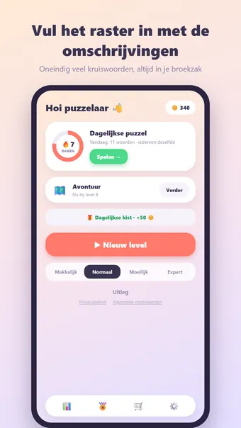
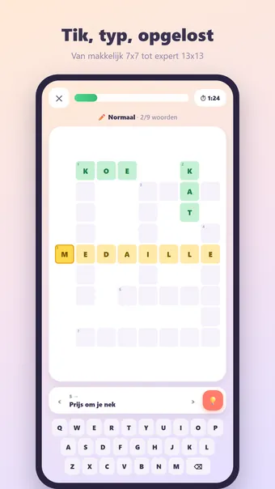
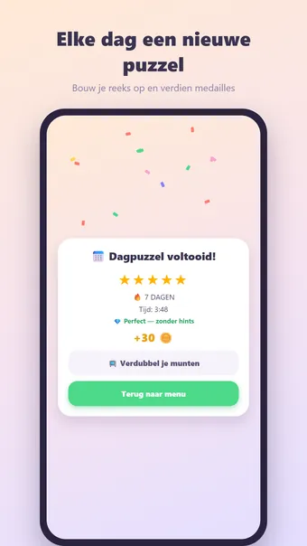

Over Kruiswoord
Speel Kruiswoord, het klassieke kruiswoordraadsel — altijd en overal, gewoon offline. Lees de omschrijvingen en vul het raster in!
Zo speel je
Elke puzzel wordt vers gegenereerd: een raster waarin alle woorden elkaar kruisen, met bij elk woord een omschrijving. Tik op een vakje om een woord te kiezen (nogmaals tikken wisselt tussen horizontaal en verticaal) en typ met het toetsenbord. Goed ingevulde woorden kleuren groen. Het level is klaar zodra het hele raster klopt.
Vier moeilijkheidsgraden
- Makkelijk: 7×7 met 6 woorden
- Normaal: 9×9 met 9 woorden
- Moeilijk: 11×11 met 13 woorden
- Expert: 13×13 met 17 woorden — voor de echte puzzelaar
Avontuur-modus
Speel je door honderden genummerde levels die steeds moeilijker worden. Ontgrendel ze één voor één, verdien op elk een medaille en pak mijlpaalbeloningen onderweg — door kleurrijke werelden van bos tot ruimte.
Dagelijkse puzzel
Elke dag één unieke puzzel, voor iedereen hetzelfde. Verdien een medaille van 1 tot 5 sterren en bouw een reeks op: 3, 7, 30 of zelfs 100 dagen op rij!
Munten en thema's
Verdien munten met elk voltooid level en geef ze uit aan hints of nieuwe uiterlijken: Bos, Ruimte, Neon, Hout, Marmer, Kerst en Halloween. Alleen cosmetisch — geen pay-to-win.
En verder
- Hints onthullen een letter of een heel woord
- 23 prestaties, van je eerste level tot honderd dagen op rij
- Uitgebreide statistieken: snelste tijd, perfecte levels en meer
- Zen-modus: zet de timer uit en puzzel ontspannen
- Geluid en trilfeedback (uit te zetten in de instellingen)
- Beschikbaar in het Nederlands, Engels, Spaans, Duits, Frans en Portugees — de taal bepaalt ook de omschrijvingen
Gratis te spelen. De app toont advertenties, die je met één optionele aankoop kunt verwijderen; een account is niet nodig.
Veelgestelde vragen
Is Kruiswoord gratis?
Ja. Kruiswoord is gratis te downloaden en te spelen. De app toont advertenties, die je met één optionele aankoop in de app kunt verwijderen.
Werkt Kruiswoord offline?
Ja. Kruiswoord werkt zonder internetverbinding, dus je speelt ook in het vliegtuig, in de trein of overal zonder wifi.
Heb ik een account nodig om Kruiswoord te spelen?
Nee. Je hoeft je niet te registreren of in te loggen: open de app en speel. Je spellen en instellingen blijven op je eigen toestel.
Hoe speel je Kruiswoord?
Elke puzzel wordt vers gegenereerd: een raster waarin alle woorden elkaar kruisen, met bij elk woord een omschrijving. Tik op een vakje om een woord te kiezen (nogmaals tikken wisselt tussen horizontaal en verticaal) en typ met het toetsenbord. Goed ingevulde woorden kleuren groen. Het level is klaar zodra het hele raster klopt.
Is er elke dag een nieuwe uitdaging?
Elke dag één unieke puzzel, voor iedereen hetzelfde. Verdien een medaille van 1 tot 5 sterren en bouw een reeks op: 3, 7, 30 of zelfs 100 dagen op rij!
Waar kan ik Kruiswoord downloaden?
Kruiswoord is voor Android-telefoons en -tablets te downloaden via Google Play. Gebruik de knop bovenaan deze pagina.
Meer spellen die je leuk vindt
Woordzoeker
De klassieke woordzoeker. Oneindig veel puzzels, elke dag een nieuwe uitdaging.
Google PlayWord Connect
Verbind letters tot woorden. Eindeloos puzzelen en elke dag een nieuwe puzzel.
Google PlaySudoku
De klassieke sudoku. Oneindig veel puzzels, elke dag een nieuwe uitdaging.
Google PlayJuridisch
Hieronder vind je de juridische documenten die voor Kruiswoord gelden.
Contact
Vragen, feedback of een privacyverzoek? Mail naar joostmuijsenberg.dev@gmail.com.